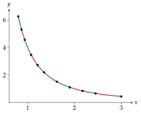
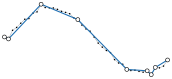

拟合
拟合把平滑函数或一串采样点转为 PiecewiseBezier，并逐段量测、回报误差，单位与曲线坐标相同。相关函数位于 bezierkit.fitting。
自适应 Hermite 拟合
参数曲线 \(C : [t_0, t_1] \to \mathbb{R}^d\) 在区间 \([a, b]\) 上的拟合，是逐一坐标取三次 Hermite 插值多项式的三次 Hermite 插值多项式（详见Hermite 插值）。套件在 \(q\) 个等距的量测参数 \(\tau_j = a + j (b - a) / (q - 1)\)（\(j = 0, \ldots, q - 1\)，\(q\) 为 error_samples）上量测误差：
此实测误差是本套件的约定，绝不大于线段真实的最大误差。
fit_parametric(
function,
derivative,
*,
t0,
t1,
tolerance,
max_depth=20,
max_segments=4096,
error_samples=9
)容许误差，单位同坐标；必须为正。
起始区间最多可对半的次数。
结果最多的线段数。
每段的量测参数个数，至少 3。
在 \([t_0, t_1]\) 上拟合参数曲线 \(C(t)\)；function 回传 Point，derivative 回传 Vector。算法为递归二分：
- 以目前区间两端的 \(C\) 与 \(C'\) 创建 Hermite 线段（详见Hermite 插值）。
- 量测误差 \(e\)。
- \(e\) 不超过
tolerance时保留此线段，并将 \(e\) 记为其fit_error；否则将区间对半，两半各自拟合。
因此每个保留的线段在量测参数上都符合容许误差。若区间到了 max_depth 仍不合格，或保留它会超过 max_segments，就抛出 ToleranceNotMet，而不回传品质较差的路径。
fit_graph(
function,
derivative,
*,
x0,
x1,
tolerance,
...
)拟合图形 \(y = f(x)\)，\(x \in [x_0, x_1]\)：即以 \(C(x) = (x, f(x))\)、\(C'(x) = (1, f'(x))\) 调用 fit_parametric，选项相同，误差为 \((x, y)\) 平面上的欧氏距离。
from bezierkit.fitting import fit_graph
path = fit_graph(
lambda x: 4 / x**2,
lambda x: -8 / x**3,
x0=0.8,
x1=3,
tolerance=1e-3,
)
# 10
print(len(path.segments))
# 0.000676
print(max(s.fit_error for s in path))

曲线弯曲剧烈处线段较短，接近直线处线段较长（参见\(4 / x^2\) 的自适应拟合。，相邻线段以不同颜色区分）。Hermite 误差界限可预估二分需要的深度：
推论 · 自适应拟合的深度
设 \(C\) 的每个坐标在 \([t_0, t_1]\) 上四阶连续可微且 \(|C_k^{(4)}| \le M\)，令 \(L = |t_1 - t_0|\)，\(d\) 为维度，\(\epsilon > 0\) 为容许误差。令
\(M = 0\) 时 \(k^* = 0\)。深度 \(k \ge k^*\) 的每个区间都能通过误差检查。因此若 max_depth \(\ge k^*\) 且 max_segments \(\ge 2^{k^*}\)，fit_parametric 不会抛出 ToleranceNotMet，也不会产生深度大于 \(k^*\) 的区间。
实测误差是线段真实最大误差的下界，因为只在量测参数上检查。若曲线可能在量测点之间起伏，请增加 error_samples。
折线简化
定义 · 点到线段的距离
对 \(x, a, b \in \mathbb{R}^d\)，\(x\) 到线段 \([a, b]\) 的距离为
以递归分割简化折线，就是 Ramer–Douglas–Peucker 算法 Ramer (1972)Douglas (1973)。fit_polyline 全程使用点到线段的距离的距离。
fit_polyline(
points,
*,
tolerance,
closed=False,
duplicate_tolerance=1e-12,
preserve_corners=True,
corner_angle=pi/4
)把采样点简化为由直线弦组成的路径，每条弦以精确的三次曲线表示（详见直线与二次曲线的三次表示）。步骤如下：
- 删除与前一点距离在
duplicate_tolerance以内的点。封闭折线另外删除结尾重复的起点，并旋转为从字典序最小的点开始，使结果与采样起点无关。 - 保留两端点；激活
preserve_corners时，另保留方向转折至少corner_angle弧度的顶点。 - 在相邻的保留顶点之间套用递归步骤：若离弦最远的顶点距离不超过
tolerance，以弦取代整段；否则保留该顶点，两侧递归处理。
每条弦的 fit_error 是被它取代的顶点到弦的最大距离（参见以容许误差 \(0.08\) 简化 41 个噪声样本。）。
递归最多有与顶点数相同的层数，每层对每个顶点至多扫描一次，因此最坏情况下与顶点数成平方关系。Hershberger (1994) 给出此算法的 \(O(n \log n)\) 实作。
命题 · 折线容许误差
设 \(v_0, \ldots, v_N\) 为通过步骤 1 的顶点（封闭折线有 \(v_N = v_0\)），\(0 = a_0 < \ldots < a_m = N\) 为输出保留的顶点指针，\(\epsilon\) 为 tolerance。对每个 \(j\) 与每个满足 \(a_j \le i \le a_{j+1}\) 的 \(i\)，
特别地，每个输出线段的 fit_error 都不超过 \(\epsilon\)。
推论 · 与折线的偏差
沿用折线容许误差的记号：
+ 折线 \(v_0 v_1 \ldots v_N\) 上的每个点，都与输出的某条弦 \([v_{a_j}, v_{a_{j+1}}]\) 相距不超过 \(\epsilon\)。
+ 每个输入点与某条弦相距不超过 \(\epsilon + \delta\)，其中 \(\delta\) 为 duplicate_tolerance；通过步骤 1 的点相距不超过 \(\epsilon\)。

maximum_polyline_deviation(points, path)各点到路径中最近之弦 \(P_0 P_3\) 的最大距离：可用来检查折线容许误差与与折线的偏差，也涵盖步骤 1 删除的点。
如同所有只看得到样本的方法，fit_polyline 限制的是与样本的偏差，而非与样本之间未知连续曲线的偏差；需要更贴近时请加密采样。